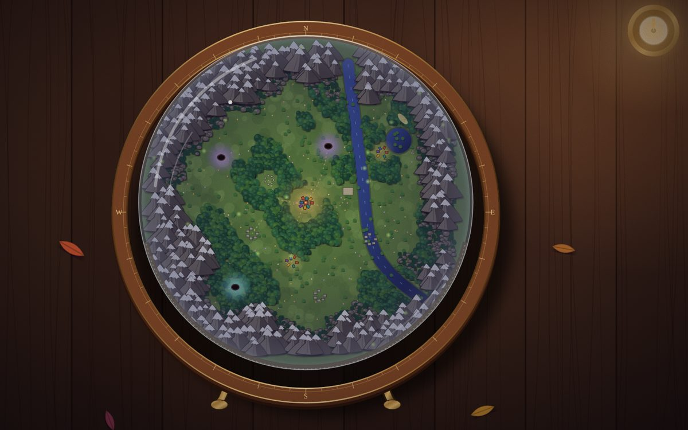
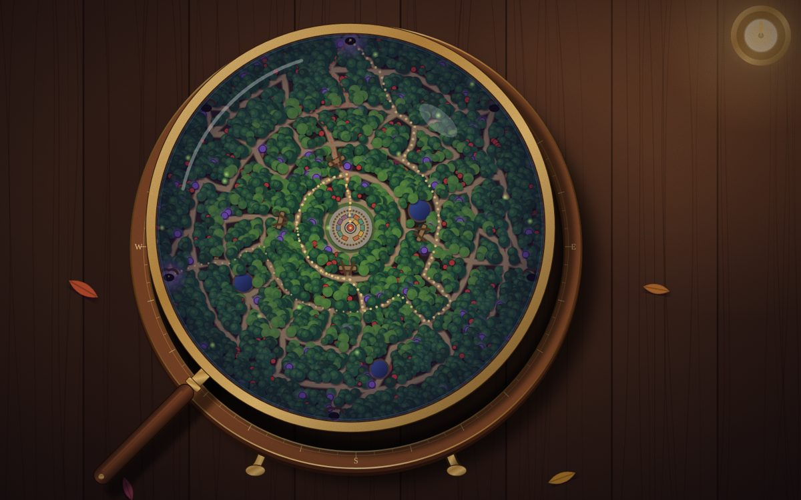
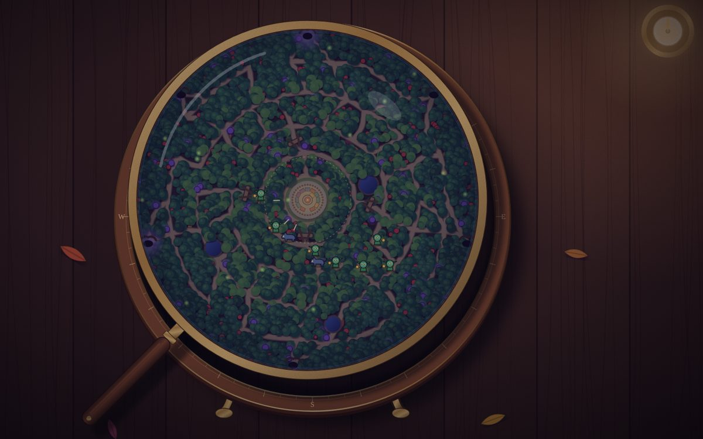
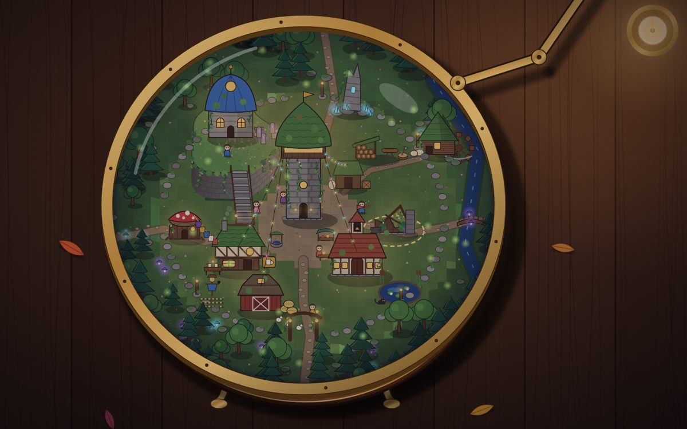
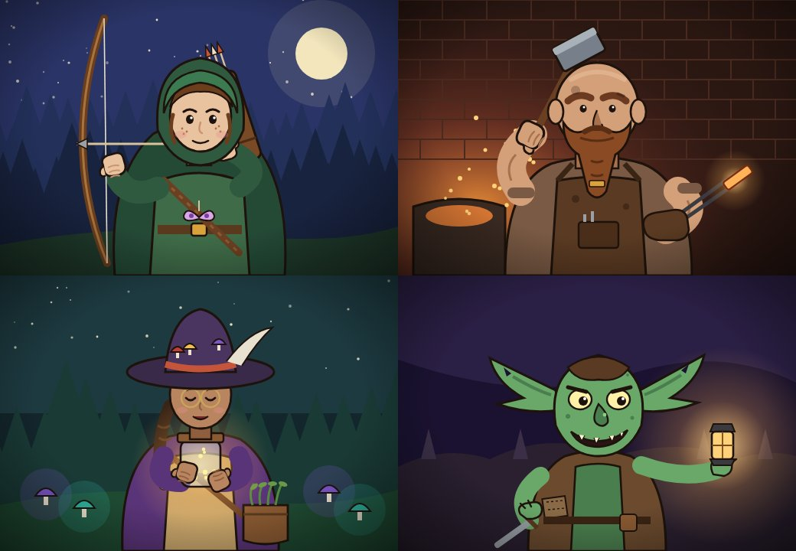

Glasswood
a village in a globe, a forest under glass
A cosy tower defence inside a terrarium globe on a candle-lit desk. These are its first designs; the game itself is being built from them. The full plan is in the repository.








